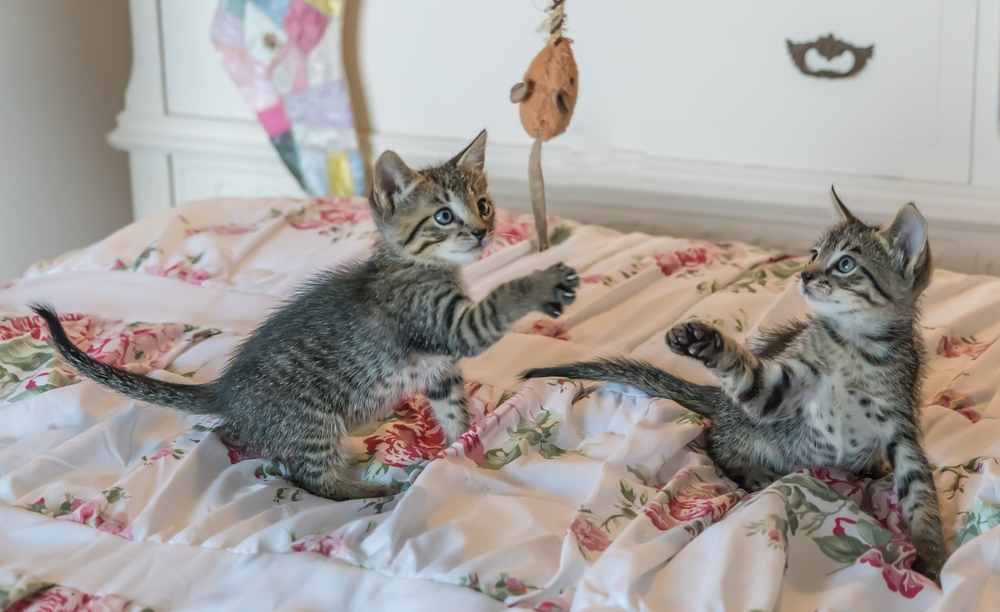

Crea un espacio seguro y útil para tu mascota
Escrito por: Luciana Proaño
Fecha: 28/12/2023
Así como los humanos requerimos de un comedor, de una cama y de un baño para satisfacer nuestras necesidades, los animales también necesitan de ciertos objetos básicos para realizarlo. Entre estos podemos encontrar:
Los perros y gatos requieren de juguetes que les permita divertirse y recrearse. Muchas veces, éstos destruyen el hogar simplemente por la falta de objetos recreativos. Es por ello que proporcionarlos y enseñarlos a usarlos evitará malas conductas y agresividad. Existen dos tipos de juguetes que les puedes dar a tus animalitos.
Otros objetos que posiblemente necesites para tu mascota incluyen

Hay ciertos objetos en nuestras casas que son inofensivos para humanos, pero pueden provocar problemas para los animales. Oculta los cables eléctricos, los productos de limpieza y los objetos pequeños que puedan ser ingeridos por tu mascota. Bloquea el acceso a lugares peligrosos, como balcones, terrazas o escaleras y mantén un buen cerramiento alrededor de tu casa para evitar escapatorias.
Además, revisa las listas de plantas tóxicas y evita tenerlas en tu hogar. De este modo, proteges a tu nuevo amigo.
Antes de recibir a una mascota, no te olvides de seguir estos consejos. Crear un ambiente seguro y útil para tu compañero es muy importante, ya que le permitirá desarrollarse correctamente y disfrutar tu compañía.
Basic Farm (4 de mayo del 2020). ¿Qué necesitas si llevarás un cachorro a tu hogar? Guía para los nuevos adoptantes. Recuperado el 28 de diciembre del 2023 de: https://basicfarm.com/blog/que-necesitar-cachorro-nuevo-hogar/
París, E. (25 de septiembre del 2023). CÓMO PREPARAR LA CASA PARA LA LLEGADA DE UN GATO O UN PERRO. Recuperado el 28 de diciembre del 2023 de: https://www.micasarevista.com/mascotas-perros-gatos/g40634201/royal-canin-mascotas-hogar/
Agradecimiento a las Doctoras Alegría Albán, Victoria Guapas, Carolina Joba de la clínica Care for Pets por su aporte para la creación de este blog.